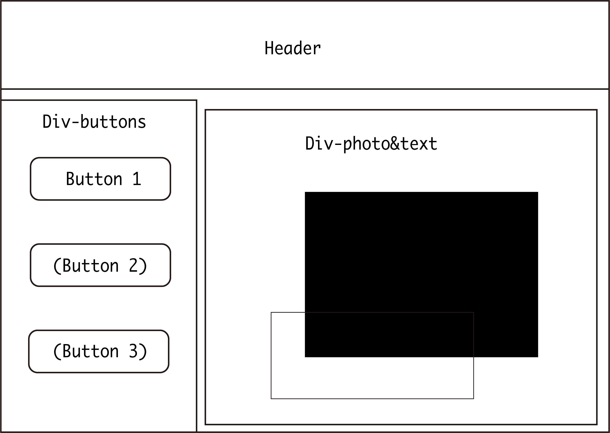
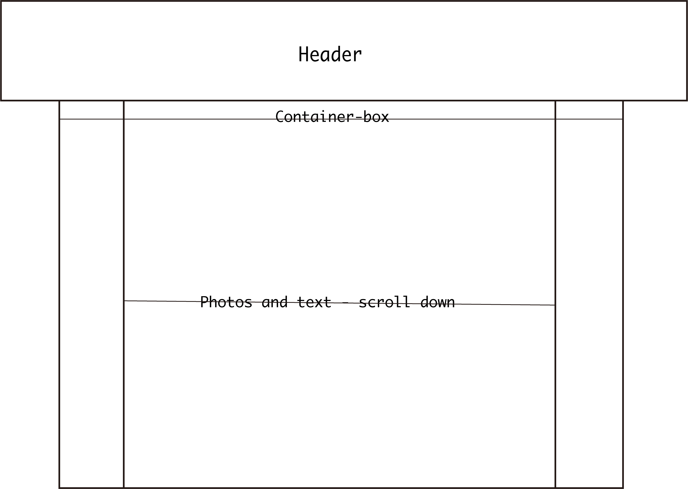
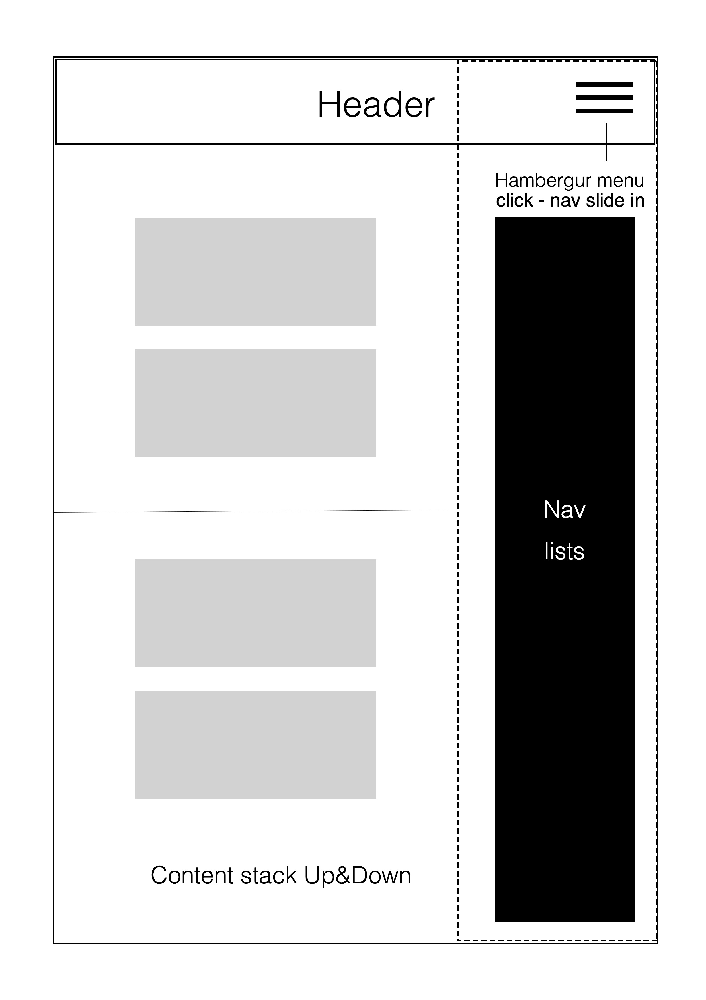

Wireframes
Homepage-wireframe
Reflection-wireframe
Reflection-wireframe
Reflection to Git
Git is one of the version control systems. More specifically, it is a distributed version control system, which is the reason why it is so popular. The advantage of git is that people can actually go through the whole process of their projects. Additionally, it provides an opportunity of working together as a team. Git users can create a repository at GitHub or Gitlab or other hosting services. The repository stores the code and updates so that users can go back to the old version. A crucial function called branches, which allows team members to create new branches that not conflict with the master branch. Therefore, people in a team can work together by uploading their code in the same repository but different branches and these codes are easy to merge.
For a team wants to create or redesign a website, they can definitely use git and take advantage of the branches. First of all, the organizer needs to create a repository and make sure it is public. Then other people can clone this repository and add a new branch so that their work is independent. They can write their own code or do different jobs for the prototype. When everybody finished their work, the final one can be merged from those codes. Also, the master branch is there, if anyone needs to debug or doing further work they can just download the production-quality code adding stuff on it. Another benefit is that everybody in the team can see the updates. It is like a transparent environment for people who cooperate.
Reflection to accessable code
First of all, I looked at the sample code from tut5. It has many "readable" instructions like "nav"" and alt in the image so that it allows the machine to translate those languages.
I am making a video website and it has many featured videos on the center of the webpage. Navbar is on the top and I think it is more accessible than on the sides for people who have visual impairment. The pattern which starts from the top and left to right exists in people's mind. The navbar on my webpage has a logo and three options of subscription, history, and upload. He can use mouse hovering to listen to what are they including the structure of the logo. As for the preview part, images should have their own explanation like the name of this video. The list on the right can tell the user what the trending videos. He can also choose to click from the right or left.
I think the most important point to disabled people is to complementary from the other aspects that they are able to utilize. For example, if the user cannot see the website. He needs a clear structure of the website, similar elements should be grouped. Also, give him a sign or direction to go like top to bottom. Make sure they can receive the content from the webpage.